Les chars de combat
Présentation des chars de combat
Les chars de combat, également connus sous le nom de véhicules blindés de combat, sont des véhicules militaires lourdement blindés et armés conçus pour mener des opérations sur le champ de bataille. Ils sont utilisés pour engager d'autres véhicules blindés, des positions fortifiées et des troupes ennemies.
Les chars de combat sont équipés d'un canon principal, qui peut tirer des obus perforants pour pénétrer les blindages ennemis, des obus explosifs pour détruire les cibles légères et des missiles guidés pour frapper des cibles à longue portée. Ils ont également des mitrailleuses pour repousser les attaques d'infanterie et pour fournir une défense rapprochée.
Les chars de combat sont équipés de chenilles pour leur permettre de se déplacer sur des terrains difficiles et accidentés. Ils ont une forte puissance de feu, une protection élevée et une mobilité exceptionnelle. Les équipages des chars sont généralement composés de trois personnes : le commandant, le conducteur et le tireur.
Les premiers chars de combat ont été utilisés lors de la Première Guerre mondiale et ont évolué pour devenir des armes redoutables sur les champs de bataille modernes. Les pays du monde entier continuent de développer des chars de combat améliorés pour répondre aux besoins de leur armée et pour maintenir leur avantage tactique sur les champs de bataille modernes.
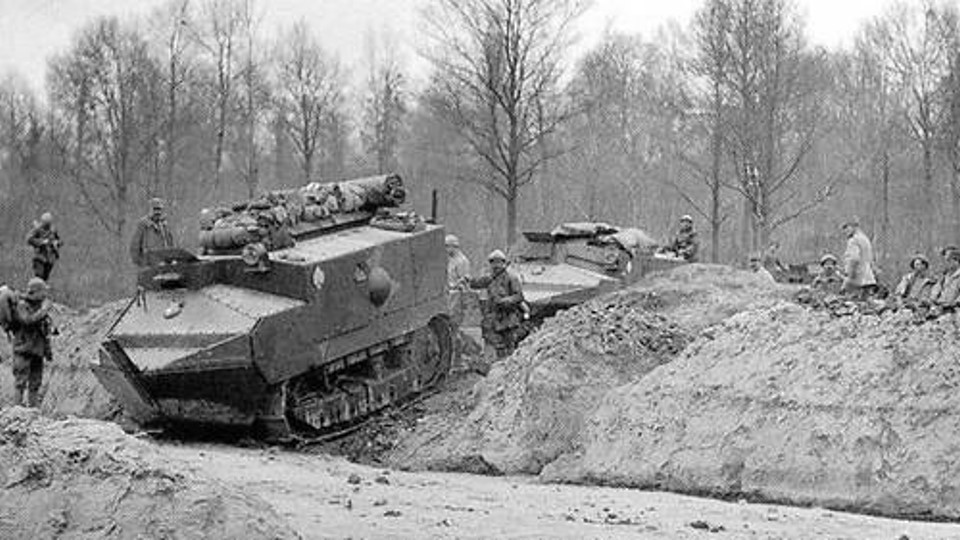
Char Schneider, premier char français, construit en 1917
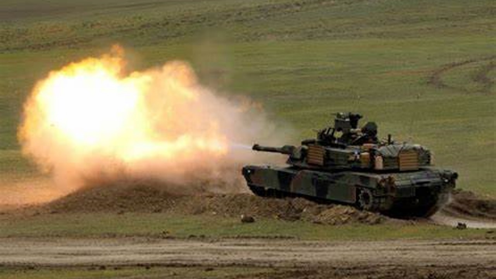
Tir d'un char lors d'un entrainement militaire
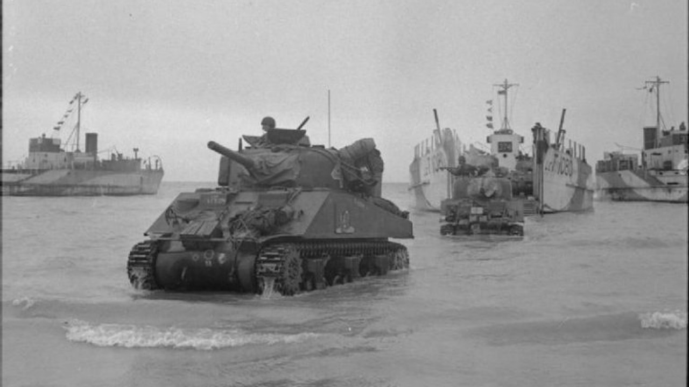
Opération Fabius en mai 1944, débarquement de chars en Normandie
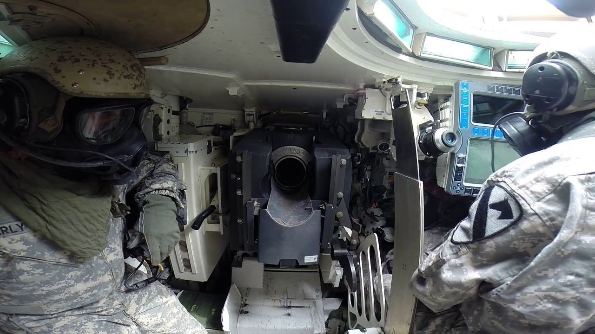
L'intérieur d'un char de combat M1, avec le chargement du canon
Les différents chars de combat
Il existe différents types de chars de combat, chacun conçu pour répondre à des besoins tactiques spécifiques. Voici une liste non exhaustive de quelques-uns des principaux types de chars de combat :
- Char de combat principal (MBT) : il s'agit du type de char de combat le plus courant. Les MBT sont équipés d'un canon principal, d'une mitrailleuse et d'un blindage épais. Ils sont utilisés pour engager d'autres chars de combat, des positions fortifiées et des troupes ennemies.
- Char de reconnaissance : il s'agit d'un type de char de combat léger conçu pour la reconnaissance et la surveillance. Les chars de reconnaissance sont équipés d'un blindage léger et d'un canon de petit calibre. Ils sont utilisés pour recueillir des informations sur les positions ennemies et pour fournir une couverture aux forces amies.
- Char de soutien d'infanterie : ce type de char de combat est équipé d'un canon principal à tir rapide et d'une mitrailleuse lourde. Ils sont utilisés pour fournir un appui-feu aux troupes d'infanterie au sol.
- Char anti-aérien : ce type de char de combat est équipé de canons anti-aériens pour abattre des avions et des hélicoptères ennemis. Ils peuvent également être équipés de missiles sol-air pour abattre des cibles aériennes à plus longue portée.
- Char amphibie : ce type de char de combat est conçu pour opérer sur l'eau ainsi que sur la terre. Les chars amphibies sont équipés de flotteurs ou d'hélices pour leur permettre de se déplacer dans l'eau.
- Char léger : il s'agit d'un type de char de combat plus petit et plus léger conçu pour la mobilité et la vitesse plutôt que pour la puissance de feu ou la protection. Ils sont souvent utilisés pour les opérations de reconnaissance et de patrouille.
- Char lourd : il s'agit d'un type de char de combat avec une puissance de feu ou de protection très élevée. Ils sont assez lents et très peu maniables. Ils sont utilisés pour détruire des structures ou des véhicules enemis.
- Char de combat du futur : certains pays développent actuellement des chars de combat du futur, qui seront équipés de technologies avancées telles que l'intelligence artificielle, la robotique et les armes à énergie dirigée. Ces chars seront plus agiles, plus rapides et plus capables de se défendre contre les menaces émergentes.
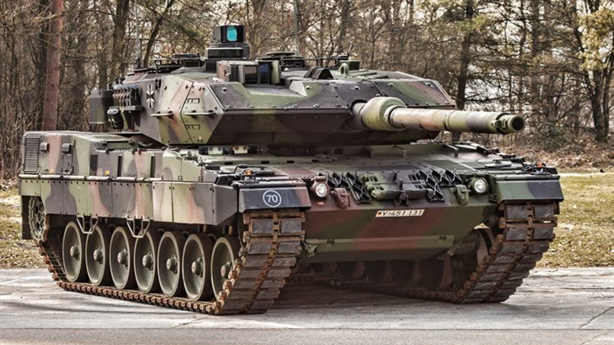
Léopard 2A7, char de combat principal (MBT)
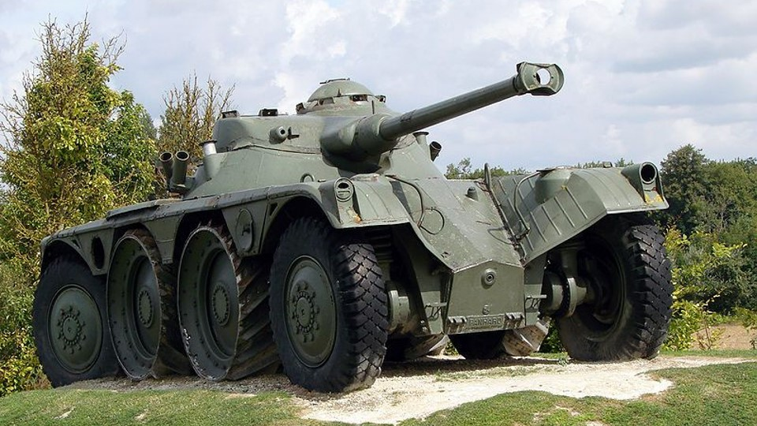
Panhard EBR-75 FL 11, char de reconnaissance
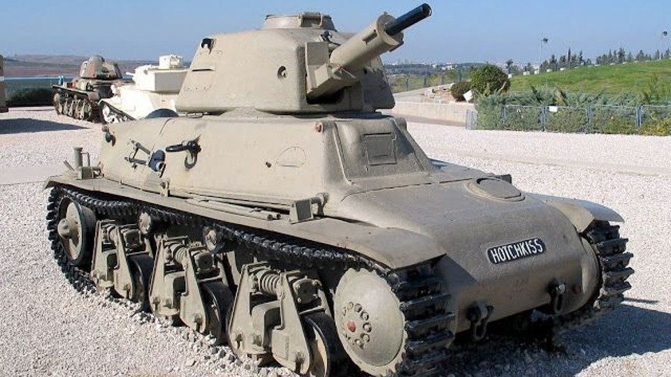
Hotchkiss H39, char léger d'accompagnement et de soutien d'infanterie
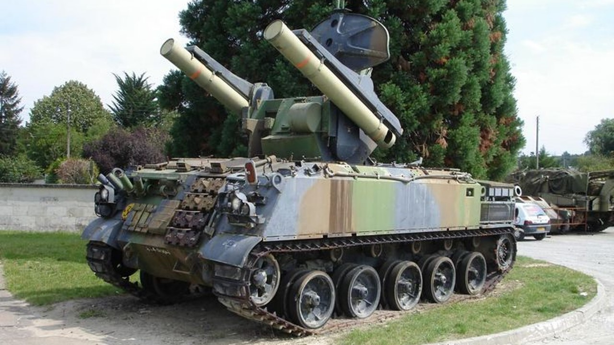
AMX-30, char anti-aérien
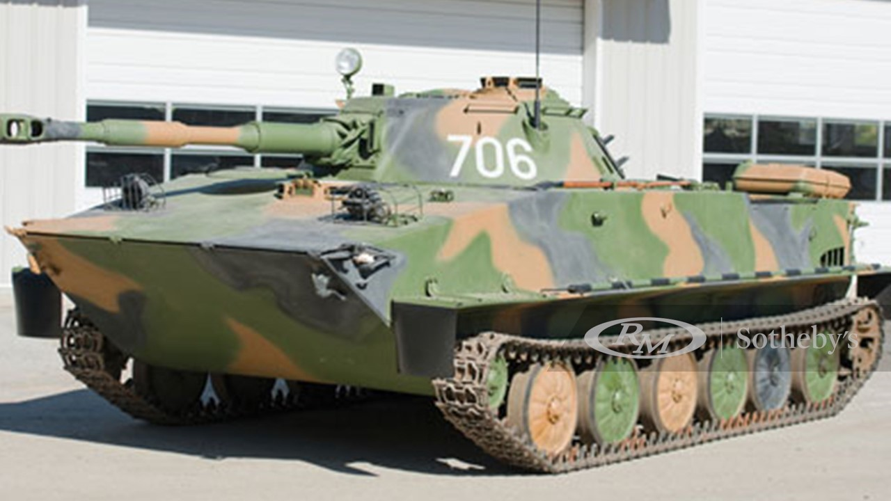
PT-76B, char amphibie léger
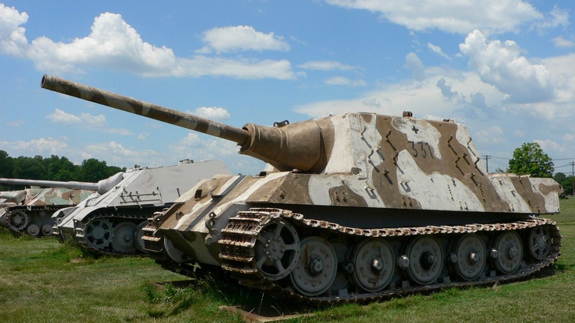
SD KFZ 186 ou Jagdpanzer VI, char lourd
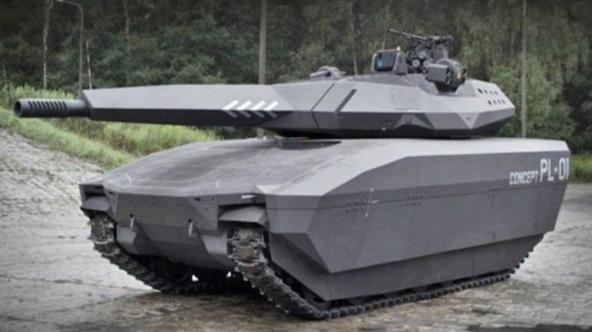
PL-01, char de combat du futur polonais, invisible aux analyses d’imagerie thermique
L'informatisation des chars de combat
L'informatisation des chars de combat a considérablement amélioré leur efficacité et leur capacité à mener des opérations sur le champ de bataille. Les systèmes informatiques et électroniques modernes permettent aux équipages de chars de surveiller leur environnement, de communiquer plus efficacement et de tirer avec plus de précision.
Les chars de combat modernes sont équipés de systèmes de surveillance et de visée électroniques sophistiqués qui permettent aux équipages de repérer les cibles à longue distance et de les engager avec une grande précision. Les capteurs thermiques et les caméras offrent une vision améliorée dans des conditions de faible luminosité et de brouillard, permettant aux équipages de mieux détecter les menaces ennemies.
Les systèmes de communication modernes permettent aux équipages de chars de se connecter avec d'autres unités de leur propre armée et de coordonner leurs opérations plus efficacement. Les chars peuvent également être intégrés à des réseaux de communication plus larges pour permettre une meilleure coordination des opérations.
Les ordinateurs embarqués dans les chars de combat modernes aident les équipages à surveiller le fonctionnement du véhicule et à diagnostiquer les problèmes éventuels. Les ordinateurs peuvent également aider à la gestion des munitions et à la planification des opérations.
En résumé, l'informatisation des chars de combat a permis d'améliorer leur précision de tir, leur capacité de communication, leur vision et leur capacité de gestion, augmentant ainsi leur efficacité sur le champ de bataille.
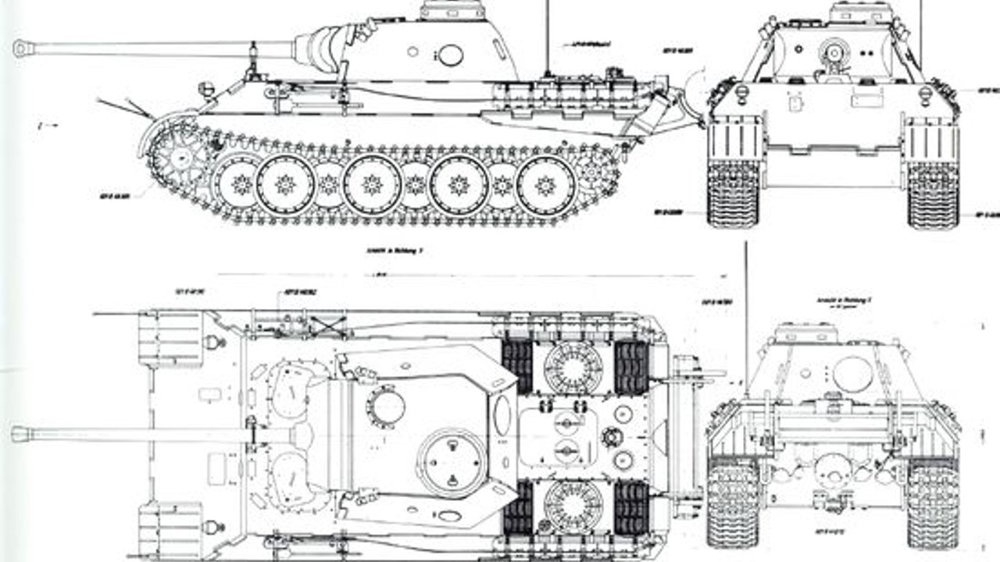
Plan d'un char de combat
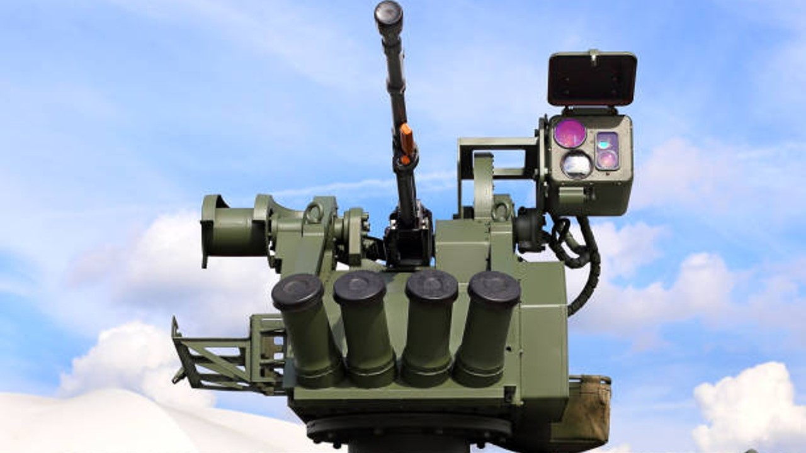
Mitrailleuse avec système informatique sur le toit d'un véhicule blindé
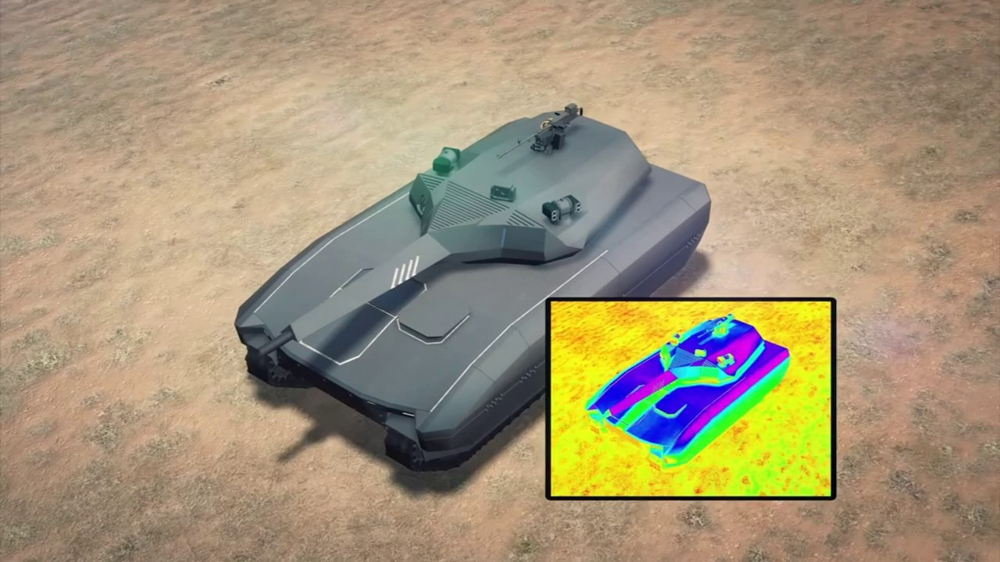
Principe de l'invisibilité thermique du char PL-01
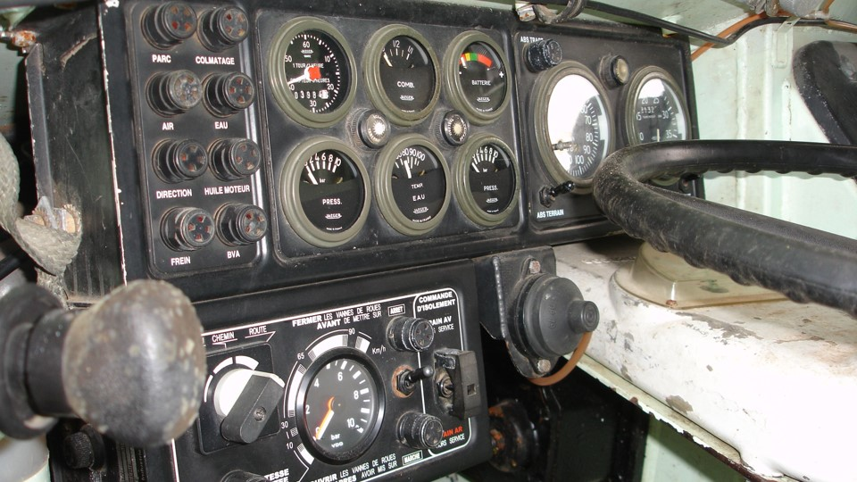
Tableau de bord d'un pilote de char de combat